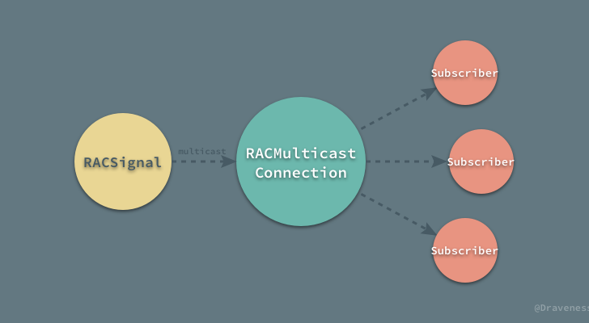
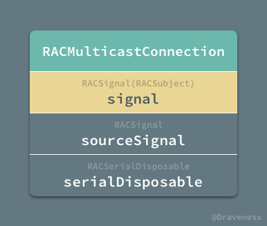
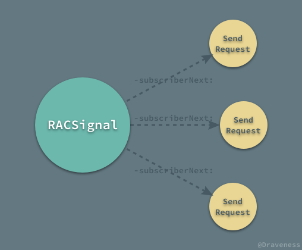
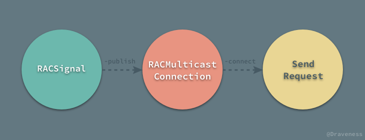
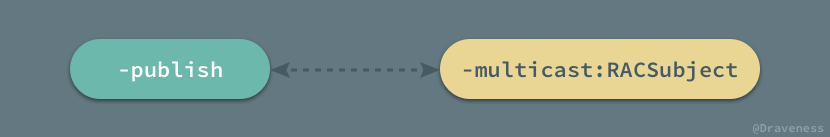
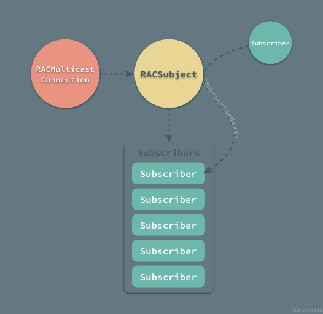
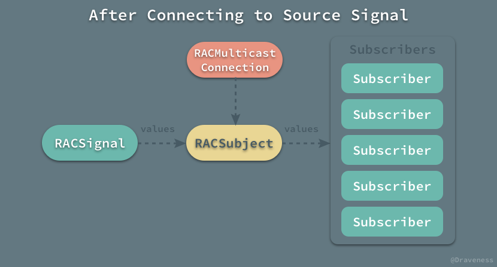
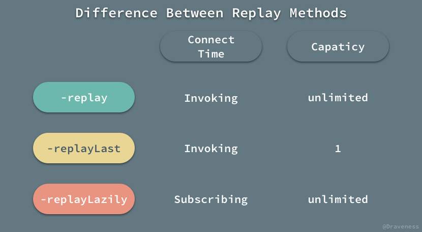

用于多播的 RACMulticastConnection
ReactiveCocoa 中的信号信号在默认情况下都是冷的，每次有新的订阅者订阅信号时都会执行信号创建时传入的 block；这意味着对于任意一个订阅者，所需要的数据都会重新计算，这在大多数情况下都是开发者想看到的情况，但是这在信号中的 block 有副作用或者较为昂贵时就会有很多问题。

我们希望有一种模型能够将冷信号转变成热信号，并在合适的时间触发，向所有的订阅者发送消息；而今天要介绍的 RACMulticastConnection 就是用于解决上述问题的。
RACMulticastConnection 简介
RACMulticastConnection 封装了将一个信号的订阅分享给多个订阅者的思想，它的每一个对象都持有两个 RACSignal：

一个是私有的源信号 sourceSignal，另一个是用于广播的信号 signal，其实是一个 RACSubject 对象，不过对外只提供 RACSignal 接口，用于使用者通过 -subscribeNext: 等方法进行订阅。
RACMulticastConnection 的初始化
RACMulticastConnection 有一个非常简单的初始化方法 -initWithSourceSignal:subject:，不过这个初始化方法是私有的：
- (instancetype)initWithSourceSignal:(RACSignal *)source subject:(RACSubject *)subject {
self = [super init];
_sourceSignal = source;
_serialDisposable = [[RACSerialDisposable alloc] init];
_signal = subject;
return self;
}
在 RACMulticastConnection 的头文件的注释中，对它的初始化有这样的说明：
Note that you shouldn't create RACMulticastConnection manually. Instead use -[RACSignal publish] or -[RACSignal multicast:].
我们不应该直接使用 -initWithSourceSignal:subject: 来初始化一个对象，我们应该通过 RACSignal 的实例方法初始化 RACMulticastConnection 实例。
- (RACMulticastConnection *)publish {
RACSubject *subject = [RACSubject subject];
RACMulticastConnection *connection = [self multicast:subject];
return connection;
}
- (RACMulticastConnection *)multicast:(RACSubject *)subject {
RACMulticastConnection *connection = [[RACMulticastConnection alloc] initWithSourceSignal:self subject:subject];
return connection;
}
这两个方法 -publish 和 -multicast: 都是对初始化方法的封装，并且都会返回一个 RACMulticastConnection 对象，传入的 sourceSignal 就是当前信号，subject 就是用于对外广播的 RACSubject 对象。
RACSignal 和 RACMulticastConnection
网络请求在客户端其实是一个非常昂贵的操作，也算是多级缓存中最慢的一级，在使用 ReactiveCocoa 处理业务需求中经常会遇到下面的情况：
RACSignal *requestSignal = [RACSignal createSignal:^RACDisposable * _Nullable(id<RACSubscriber> _Nonnull subscriber) {
NSLog(@"Send Request");
NSURL *url = [NSURL URLWithString:@"http://localhost:3000"];
AFHTTPSessionManager *manager = [[AFHTTPSessionManager alloc] initWithBaseURL:url];
NSString *URLString = [NSString stringWithFormat:@"/api/products/1"];
NSURLSessionDataTask *task = [manager GET:URLString parameters:nil progress:nil
success:^(NSURLSessionDataTask * _Nonnull task, id _Nullable responseObject) {
[subscriber sendNext:responseObject];
[subscriber sendCompleted];
} failure:^(NSURLSessionDataTask * _Nullable task, NSError * _Nonnull error) {
[subscriber sendError:error];
}];
return [RACDisposable disposableWithBlock:^{
[task cancel];
}];
}];
[requestSignal subscribeNext:^(id _Nullable x) {
NSLog(@"product: %@", x);
}];
[requestSignal subscribeNext:^(id _Nullable x) {
NSNumber *productId = [x objectForKey:@"id"];
NSLog(@"productId: %@", productId);
}];
通过订阅发出网络请求的信号经常会被多次订阅，以满足不同 UI 组件更新的需求，但是以上代码却有非常严重的问题。

每一次在 RACSignal 上执行 -subscribeNext: 以及类似方法时，都会发起一次新的网络请求，我们希望避免这种情况的发生。
为了解决上述问题，我们使用了 -publish 方法获得一个多播对象 RACMulticastConnection，更改后的代码如下：
RACMulticastConnection *connection = [[RACSignal createSignal:^RACDisposable * _Nullable(id<RACSubscriber> _Nonnull subscriber) {
NSLog(@"Send Request");
...
}] publish];
[connection.signal subscribeNext:^(id _Nullable x) {
NSLog(@"product: %@", x);
}];
[connection.signal subscribeNext:^(id _Nullable x) {
NSNumber *productId = [x objectForKey:@"id"];
NSLog(@"productId: %@", productId);
}];
[connection connect];
在这个例子中，我们使用 -publish 方法生成实例，订阅者不再订阅源信号，而是订阅 RACMulticastConnection 中的 RACSubject 热信号，最后通过 -connect 方法触发源信号中的任务。

对于热信号不了解的读者，可以阅读这篇文章 『可变』的热信号 RACSubject。
publish 和 multicast 方法
我们再来看一下 -publish 和 -multicast: 这两个方法的实现：
- (RACMulticastConnection *)publish {
RACSubject *subject = [RACSubject subject];
RACMulticastConnection *connection = [self multicast:subject];
return connection;
}
- (RACMulticastConnection *)multicast:(RACSubject *)subject {
RACMulticastConnection *connection = [[RACMulticastConnection alloc] initWithSourceSignal:self subject:subject];
return connection;
}
当 -publish 方法调用时相当于向 -multicast: 传入了 RACSubject。

-publish 只是对 -multicast: 方法的简单封装，它们都是通过 RACMulticastConnection 私有的初始化方法 -initWithSourceSignal:subject: 创建一个新的实例。
在使用 -multicast: 方法时，传入的信号其实就是用于广播的信号；这个信号必须是一个 RACSubject 本身或者它的子类：

传入 -multicast: 方法的一般都是 RACSubject 或者 RACReplaySubject 对象。
订阅源信号的时间点
订阅 connection.signal 中的数据流时，其实只是向多播对象中的热信号 RACSubject 持有的数组中加入订阅者，而这时刚刚创建的 RACSubject 中并没有任何的消息。

只有在调用 -connect 方法之后，RACSubject 才会订阅源信号 sourceSignal。
- (RACDisposable *)connect {
self.serialDisposable.disposable = [self.sourceSignal subscribe:_signal];
return self.serialDisposable;
}
这时源信号的 didSubscribe 代码块才会执行，向 RACSubject 推送消息，消息向下继续传递到 RACSubject 所有的订阅者中。

-connect 方法通过 -subscribe: 实际上建立了 RACSignal 和 RACSubject 之间的连接，这种方式保证了 RACSignal 中的 didSubscribe 代码块只执行了一次。
所有的订阅者不再订阅原信号，而是订阅 RACMulticastConnection 持有的热信号 RACSubject，实现对冷信号的一对多传播。
在 RACMulticastConnection 中还有另一个用于连接 RACSignal 和 RACSubject 信号的 -autoconnect 方法：
- (RACSignal *)autoconnect {
__block volatile int32_t subscriberCount = 0;
return [RACSignal
createSignal:^(id<RACSubscriber> subscriber) {
OSAtomicIncrement32Barrier(&subscriberCount);
RACDisposable *subscriptionDisposable = [self.signal subscribe:subscriber];
RACDisposable *connectionDisposable = [self connect];
return [RACDisposable disposableWithBlock:^{
[subscriptionDisposable dispose];
if (OSAtomicDecrement32Barrier(&subscriberCount) == 0) {
[connectionDisposable dispose];
}
}];
}];
}
它保证了在 -autoconnect 方法返回的对象被第一次订阅时，就会建立源信号与热信号之间的连接。
使用 RACReplaySubject 订阅源信号
虽然使用 -publish 方法已经能够解决大部分问题了，但是在 -connect 方法调用之后才订阅的订阅者并不能收到消息。
如何才能保存 didSubscribe 执行过程中发送的消息，并在 -connect 调用之后也可以收到消息？这时，我们就要使用 -multicast: 方法和 RACReplaySubject 来完成这个需求了。
RACSignal *sourceSignal = [RACSignal createSignal:...];
RACMulticastConnection *connection = [sourceSignal multicast:[RACReplaySubject subject]];
[connection.signal subscribeNext:^(id _Nullable x) {
NSLog(@"product: %@", x);
}];
[connection connect];
[connection.signal subscribeNext:^(id _Nullable x) {
NSNumber *productId = [x objectForKey:@"id"];
NSLog(@"productId: %@", productId);
}];
除了使用上述的代码，也有一个更简单的方式创建包含 RACReplaySubject 对象的 RACMulticastConnection：
RACSignal *signal = [[RACSignal createSignal:...] replay];
[signal subscribeNext:^(id _Nullable x) {
NSLog(@"product: %@", x);
}];
[signal subscribeNext:^(id _Nullable x) {
NSNumber *productId = [x objectForKey:@"id"];
NSLog(@"productId: %@", productId);
}];
-replay 方法和 -publish 差不多，只是内部封装的热信号不同，并在方法调用时就连接原信号：
- (RACSignal *)replay {
RACReplaySubject *subject = [RACReplaySubject subject];
RACMulticastConnection *connection = [self multicast:subject];
[connection connect];
return connection.signal;
}
除了 -replay 方法，RACSignal 中还定义了与 RACMulticastConnection 中相关的其它 -replay 方法：
- (RACSignal<ValueType> *)replay;
- (RACSignal<ValueType> *)replayLast;
- (RACSignal<ValueType> *)replayLazily;
三个方法都会在 RACMulticastConnection 初始化时传入一个 RACReplaySubject 对象，不过却有一点细微的差别：

相比于 -replay 方法，-replayLast 方法生成的 RACMulticastConnection 中热信号的容量为 1：
- (RACSignal *)replayLast {
RACReplaySubject *subject = [RACReplaySubject replaySubjectWithCapacity:1];
RACMulticastConnection *connection = [self multicast:subject];
[connection connect];
return connection.signal;
}
而 replayLazily 会在返回的信号被第一次订阅时，才会执行 -connect 方法：
- (RACSignal *)replayLazily {
RACMulticastConnection *connection = [self multicast:[RACReplaySubject subject]];
return [RACSignal
defer:^{
[connection connect];
return connection.signal;
}];
}
总结
RACMulticastConnection 在处理冷热信号相互转换时非常好用，在 RACSignal 中也提供了很多将原有的冷信号通过 RACMulticastConnection 转换成热信号的方法。
在遇到冷信号中的行为有副作用后者非常昂贵时，我们就可以使用这些方法将单播变成多播，提高执行效率，减少副作用。
References
Github Repo：iOS-Source-Code-Analyze
Follow: Draveness · GitHub